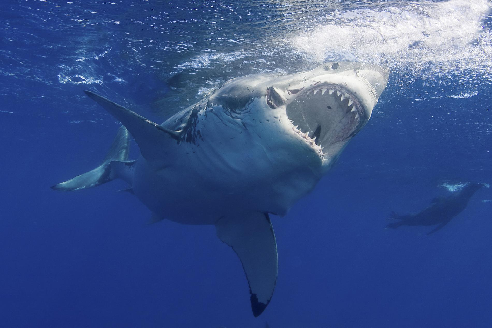

AThe legendary great white shark is far more fearsome in our imaginations than in reality. As scientific research on these elusive predators increases, their image as mindless killing machines is beginning to fade.
Of the 100-plus annual shark attacks worldwide, fully one-third to one-half are attributable to great whites. However, most of these are not fatal, and new research finds that great whites, who are naturally curious, are "sample biting" then releasing their victims rather than preying on humans. It's not a terribly comforting distinction, but it does indicate that humans are not actually on the great white's menu.
